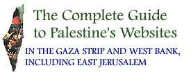

1 9 9 8
GOLDEN
OLIVE AWARDS
There were 15 Golden Olive Award winners in 1998, out of a possible total of 113 (Internet service providers and computer companies are excluded from consideration), which represents only 13 percent of Palestinian websites. For a discussion of why there were so few this year, see the 12 February 1998 e-mail edition of Birzeit, Palestine and the World Wide Web.
academic & research
arts & culture
business & economy
- No successful websites. Tut, tut, all that money.
government & services
human rights
industry & products
- No successful websites. The idea is to sell the product, guys.
internet & computers
- Not considered for golden olive awards as some of our friends are quite big and mean.
news & media
online memorials
- No successful websites, although one did get quite close.
organisations & associations
- No successful websites. A lesson in how to make something interesting boring.
personal homepages
schools & universities
- Birzeit University - for making the effort by building quality, Palestinian resources that people want to read.
tourist information
The Complete Guide was designed by Nigel Parry. Maintained by Adam Hanieh, Birzeit Webmaster, webmaster@birzeit.edu.
1998 Golden Olive Award complaints to the Western Wall